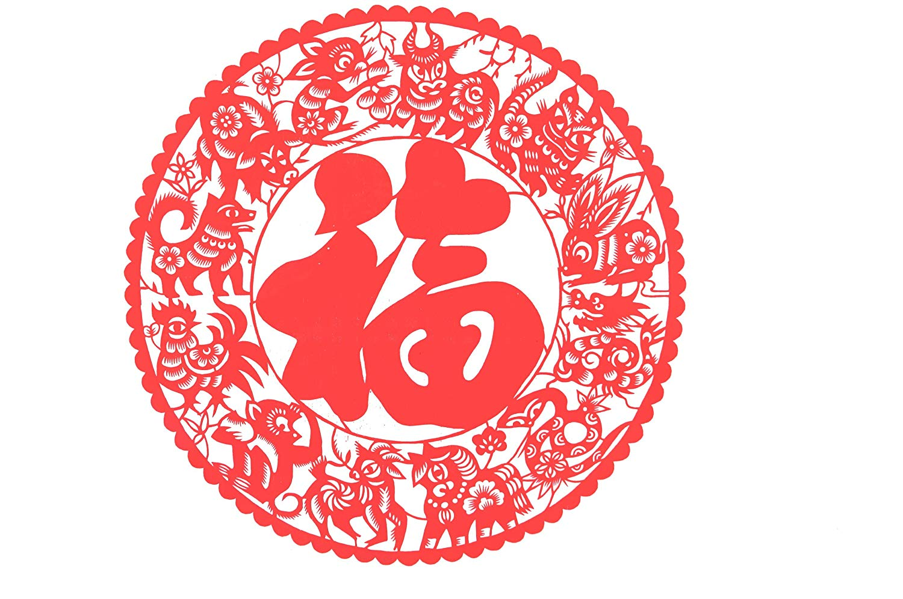
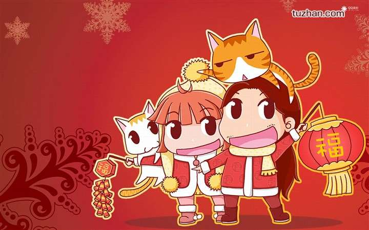
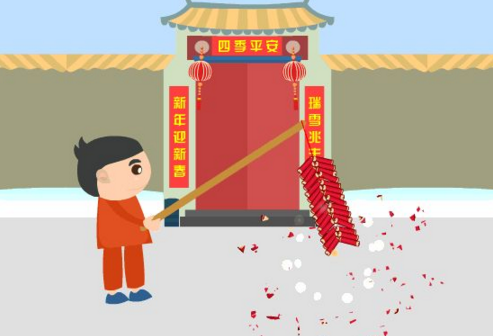

春节
春节，即农历新年，是一年之岁首，亦为传统意义上的“年节”。俗称新春、新岁、新年、新禧、年禧、大年等，口头上又称度岁、庆岁、过年、过大年。春节历史悠久，由上古时代岁首祈年祭祀演变而来。万物本乎天、人本乎祖，祈年祭祀、敬天法祖，报本反始也。春节的起源蕴含着深邃的文化内涵，在传承发展中承载了丰厚的历史文化底蕴。在春节期间，全国各地均有举行各种庆贺新春活动，热闹喜庆的气氛洋溢；这些活动以除旧布新、迎禧接福、拜神祭祖、祈求丰年为主要内容，形式丰富多彩，带有浓郁的各地域特色，凝聚着中华传统文化精华。

